전기기사 (2006-03-05 기출문제)
1과목: 전기자기학
1. 자기모멘트 9.8 × 10-5[Wb/m]의 막대 자석을 지구자계의 수평성분 10.5[AT/m]의 곳에서 지자기자오면으로부터 90° 회전시키는데 필요한 일은 몇 [J]인가?
- 9.3×10-5
- 9.8×10-3
- 1.03×10-5
- 1.03×10-3
(정답률: 67%)

2. 전기력선에 관한 다음 설명 중 틀린 것은?
- 전기력선은 도체 표면에 수직으로 출입한다.
- 도체 내부에는 전력선이 다수 존재한다.
- 단위 전하에서는 진공 중에서
 개의 전기력선이 출입한다.
개의 전기력선이 출입한다. - 전기력선은 전계가 0이 아닌 곳에서는 등전위면과 직교한다.
(정답률: 69%)
3. 길이 ℓ[m], 단면적의 지름 d[m]인 원통이 길이방향으로 균일하게 자화되어 자화의 세기가 J[Wb/m2]인 경우 원통 양단에서의 전자극의 세기는 몇 [Wb]인가?
- πd2J
- πdJ
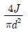
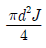
(정답률: 66%)
4. 평등자계를 얻는 방법으로 가장 알맞은 것은?
- 길이에 비하여 단면적이 충분히 큰 솔레노이드에 전류를 흘린다.
- 단면적에 비하여 길이가 충분히 긴 솔레노이드에 전류를 흘린다.
- 단면적에 비하여 길이가 충분히 긴 원통형 도선에 전류를 흘린다.
- 길이에 비하여 단면적이 충분히 큰 원통형 도선에 전류를 흘린다.
(정답률: 66%)
5. 전선에 흐르는 전류를 1.5배 증가시켜도 저항에 의한 전압 강하가 변하지 않으려면 전선의 반지름을 약 몇 배로 하여야 되는가?
- 0.67
- 0.82
- 1.22
- 3
(정답률: 38%)
6. 자속의 연속성을 나타낸 식은?
- div B=ρ
- div B=0
- B=μH
- div B=μH
(정답률: 71%)
7. 전계 E[V/m], 전속밀도 D[C/m2], 유전률 ε[F/m]인 유전체 내에 저장되는 에너지 밀도는 몇 [J/m3]인가?
- ED
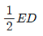
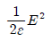
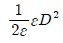
(정답률: 77%)
8. 도전률이 5.8 × 107, 비투자율이 1인 구리에 60[Hz]의 주파수를 갖는 전류가 흐를때, 표피 두께는 몇 [mm]인가?
- 8.53
- 9.78
- 11.28
- 13.03
(정답률: 61%)
9. 그림과 같은 1[m]당 권선수 n, 반지름a[m]의 무한장 솔레노이드에서 자기인덕턴스는 n과 a사이에 어떤 관계가 있는가?9
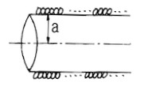
- a와는 상관없고 n2에 비례한다.
- a와 n의 곱에 비례한다.
- a2과 n2의 곱에 비례한다.
- a2에 반비례하고 n2에 비례한다.
(정답률: 54%)
10. 다음 중 거리 r에 반비례하는 것은?
- 무한장 직선전하에 의한 전계
- 구도체 전하에 의한 전계
- 전기쌍극자에 의한 전계
- 전기쌍극자에 의한 전위
(정답률: 70%)
11. 간격 3[m]의 평행 무한평면도체에 각각 ±4[C/m2]의 전하를 주었을 때, 두 도체간의 전위차는 약 몇 [V]인가?
- 1.5 × 1011
- 1.5 × 1012
- 1.36 × 1011
- 1.36 × 12
(정답률: 36%)
12. 유전률 ε[F/m], 고유저항 ρ[Ωㆍm]인 유전체로 채운 정전용량 C[F]의 콘덴서에 전압 V[V]를 가할 때, 유전체 중의 t초 동안에 발생 하는 열량은 몇 [cal]인가?
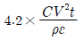
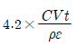
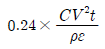
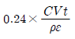
(정답률: 58%)
13. 내원통의 반지름 a, 외원통의 반지름 b인 동축원통 콘덴서의 내외 원통사이에 공기를 넣었을 때 정전용량이 Co 이었다. 내외 반지름을 모두 3배로 하고 공기대신 비유전률 9인 유전체 를 넣었을 경우의 정전용량은?
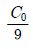
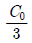
- C0
- 9C0
(정답률: 70%)
14. x＞0 인 영역에 ε1=3인 유전체, x＜0 인 영역에 ε2=5인 유전체가 있다. 유전률 ε2인 영역에서 전계 E=20ax+30ay-400az[V/m]일 때, 유전률 ε1인 영역에서의 전계 E1은 몇 [V/m]인가?
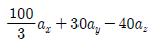
- 20ax+90ay-40az
- 100ax+10ay-40az
- 60ax+30ay-40az
(정답률: 77%)
15. 반지름 a인 접지 구도체의 중심에서 d(＞a)되는 점에 점전하 Q가 있을 때 영상전하 Q'의 크기는?
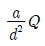
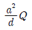
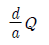
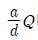
(정답률: 47%)
16. 전자파의 특성에 대한 설명으로 틀린 것은?
- 전파 Ex를 특성 임피던스로 나누면 자파 Hy가된다.
- 매질이 도전성을 갖지 않으면 전파 Ex와 자파 Hy는 동위상이 된다.
- 전파 Ex와 자파 Hy의 진동방향은 진행 방향에 수평인 종파이다.
- 전자파의 속도는 주파수와 무관하다.
(정답률: 66%)
17. 점전하 0.5 [C] 이 전계 E=3ax+5ay+8az[V/m] 중에서 속도 4ax+2ay+3az로 이동할 때 받는 힘은 몇 [N] 인가?
- 4.95
- 7.45
- 9.95
- 13.47
(정답률: 34%)
18. 그림과 같이 반지름 a인 무한길이 직선도선에 I인 전류가 도선 단면에 균일하게 흐르고 있다. 이 때 축으로부터 r(a＞r)인 거리에 있는 도선 내부의 점 P의 자계의 세기에 관한 설명으로 옳은 것은?
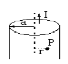
- r에 비례한다.
- r에 반비례한다.
- r2에 반비례한다.
- r에 관계없이 항상 0이다.
(정답률: 44%)
19. C1, C2의 두 폐회로간의 상호인덕턴스를 구하는 노이만의 공식은?
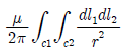
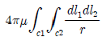
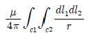
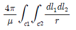
(정답률: 71%)
20. 전계 E=i2e3xsin5y-je3xcos5y+k3ze4z일 때, 점(x=0, y=0, z=0)에서의 발산은?
- 0
- 3
- 6
- 10
(정답률: 34%)
2과목: 전력공학
21. 우리나라에서 사용하는 공칭전압 22,000(22,000/38,000)에서 괄호안인(22,000/38,000)의 의미는?
- (선간전압/상전압)
- (비접지전압/접지전압)
- (상전압/선간전압)
- (접지전압/비접지전압)
(정답률: 69%)
22. 전선 및 계기구를 보호하기 위한 목적으로 전로 중 필요한 개소에는 과전류차단기를 시설하여야 하는데 다음 중 필요한 개소가 아닌 곳은?
- 인입구
- 간선의 전원측
- 평형부하의 말단
- 분기점
(정답률: 49%)
23. 반지름 16[mm]의 강심알루미늄 연선으로 구성된 완전 연가된 3상 1회선 송전선로가 있다. 각 상간의 등가 선간거리가 3,000[mm]라고 할 때, 이 선로의 작용인덕턴스는 약 몇[mH/km]인가?
- 0.8
- 1.1
- 1.5
- 1.8
(정답률: 64%)
24. 다음 중 감전 방지대책으로 적절하지 못한 것은?
- 회로 전압의 승압
- 누전차단기를 설치
- 이중 절연 기기를 사용
- 기계기구류의 외함을 접지
(정답률: 80%)
25. 다음 중 송전선로에서 이상전압이 가장 크게 발생하기 쉬운 경우는?
- 무부하 송전선로를 폐로하는 경우
- 무부하 송전선로를 개로하는 경우
- 부하 송전선로를 폐로하는 경우
- 부하 송전선로를 개로하는 경우
(정답률: 71%)
26. 발열량 5,000[kcal/kg]의 석탄을 사용하고 있는 기력발전소가 있다. 이 발전소의 종합 효율이 30[%]라면, 30억 [kWh]를 발생하는데 필요한 석탄량은 몇 톤 인가?
- 300,000
- 500,000
- 860,000
- 1,720,000
(정답률: 52%)
27. 전력계통의 주파수 변동은 주로 무엇의 변화에 기인하는가?
- 유효전력
- 무효전력
- 계통전압
- 계통 임피던스
(정답률: 47%)
28. 그림과 같이 수심이 5[m]인 수조가 있다. 이 수조의 측면에 미치는 수압 Po[kg/m2]는 얼마인가 ?
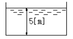
- 2,500
- 3,000
- 3,500
- 4,000
(정답률: 49%)
29. 그림의 F점에서 3상 단락고장이 생겼다. 발전기 쪽에서 본 3상 단락전류는 몇 [kA]가 되는가? (단, 154[kV] 송전선의 리액턴스는 1,000[MVA]를 기준으로 하여 2[%/km]이다.)
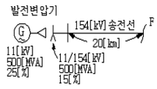
- 43.7
- 47.7
- 53.7
- 59.7
(정답률: 50%)
30. 한류리액터를 사용하는 가장 큰 목적은?
- 충전전류의 제한
- 접지전류의 제한
- 누설전류의 제한
- 단락전류의 제한
(정답률: 80%)
31. 계전기의 반한시 특성이란?
- 동작전류가 클수록 동작시간이 길어진다.
- 동작전류가 흐르는 순간에 동작한다.
- 동작전류에 관계없이 동작시간은 일정하다.
- 동작전류가 크면 동작시간은 짧아진다.
(정답률: 77%)
32. 전력계통의 과도안정도 향상 대책과 관련 없는 것은?
- 속응여자방식 채용
- 계통의 연계
- 중간조상방식 채용
- 빠른 역률 조정
(정답률: 62%)
33. 피뢰기의 충격방전 개시전압은 무엇으로 표시하는가?
- 직류전압의 크기
- 충격파의 평균치
- 충격파의 최대치
- 충격파의 실효치
(정답률: 77%)
34. 전력용 콘덴서를 변전소에 설치할 때 직력리액터를 설치코자 한다. 직렬리액터의 용량을 결정하는 식은? (단, fo 는 전원의 기본주파수, C는 역률개선용 콘덴서의 용량, L은 직렬리액터의 용량임)
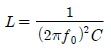
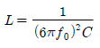
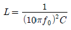
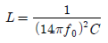
(정답률: 64%)
35. 네트워크 배전방식의 장점이 아닌 것은?
- 정전이 적다.
- 전압변동이 적다.
- 인축의 접촉사고가 적어진다.
- 부하 증가에 대한 적응성이 크다.
(정답률: 75%)
36. 단로기에 대한 설명으로 적합하지 않은 것은?
- 소호장치가 있어 아크를 소멸시킨다.
- 무부하 및 여자전류의 개폐에 사용된다.
- 배전용 단로기는 보통 디스컨넥팅 바로 개폐한다.
- 회로의 분리 또는 계통의 접속 변경시 사용한다.
(정답률: 79%)
37. 가공지선에 대한 설명 중 틀린 것은?
- 직격뇌에 대하여 특히 유효하며 탑 상부에 시설 하므로 뇌는 주로 가공지선에 내습한다.
- 가공지선 때문에 송전선로의 대지정전용량이 감소하므로 대지사이에 방전할 때 유도전압이 특히 커서 차폐 효과가 좋다.
- 송전선의 지락시 지락전류의 일부가 가공지선에 흘러 차폐작용을 하므로 전자유도장해를 적게 할 수도 있다.
- 유도뢰 서지에 대하여도 그 가설구간 전체에 사고방지의 효과가 있다.
(정답률: 61%)
38. 경간이 200[m]인 가공 전선로가 있다. 사용전선의 길이는 경간보다 몇 [m] 더 길게 하면 되는가? (단, 사용전선의 1[m]당 무게는 2[kg], 인장하중은 4,000[kg], 전선의 안전율은 2로 하고 풍압하중은 무시한다.)
- 1/2
- √2
- 1/3
- √3
(정답률: 62%)
39. 화력발전이 점유하는 비중이 수력발전에 비하여 대단히 큰 전력계통에서 수력발전의 운전방법으로 가장 적절한 것은?
- 일정출력운전
- 기저부하운전
- 예비출력운전
- 첨두부하운전
(정답률: 55%)
40. 3상 선로의 전압이 V[V]이고, P[W],역률 cosθ인 부하에서 한 선의 저항이 R[Ω]이라면 이 3상 선로의 전체 전력손실은 몇 [W]가 되겠는가?
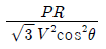
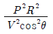
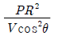
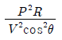
(정답률: 59%)
3과목: 전기기기
41. 다이오드를 사용한 정류회로에서 여러 개를 직렬로 연결하여 사용할 경우 얻는 효과는?
- 다이오드를 과전류로부터 보호
- 다이오드를 과전압으로부터 보호
- 부하출력의 맥동률 감소
- 전력공급의 증대
(정답률: 66%)
42. 15[kW] 3상유도 전동기의 기계손이 350[W] 전부하시의 슬립이 3[%]이다. 전부하시의 2차 동손[W]은?
- 275
- 395
- 426
- 475
(정답률: 46%)
43. 3상 권선형 유도 전동기의 전부하 슬립이 5[%], 2차 1상의 저항 0.5[Ω]이다. 이 전동기의 기동토크를 전부하 토크와 같도록 하려면 외부에서 2차에 삽입할 저항은 몇 [Ω]인가?
- 10
- 9.5
- 9
- 8.5
(정답률: 67%)
44. 직류기의 최대효율이 되는 경우는 어느 것인가?
- 고정손 = 부하손
- 기계손 = 전기자동손
- 와류손 = 히스테리시스손
- 전부하동손 = 철손
(정답률: 52%)
45. 단상 50[kVA] 1차 3300[V], 2차 210[V] 60[Hz] 1차 권회수 550, 철심의 유효단면적 150[cm2]의 변압기 철심의 자속밀도 [Wb/m2]는?
- 약 2.0
- 약 1.5
- 약 1.2
- 약 1.0
(정답률: 60%)
46. 보통 전기기계에서는 규소강판을 성충하여 사용하는 경우가 많다. 성충하는 이유는 다음 중 어느 것을 줄이기 위한 것인가?
- 히스테리시스손
- 와류손
- 동손
- 기계손
(정답률: 49%)
47. 동기 발전기의 돌발 단락 전류를 주로 제한하는 것은?
- 동기리액턴스
- 권선저항
- 누설리액턴스
- 동기임피던스
(정답률: 45%)
48. 보통 농형에 비하여 2중 농형 전동기의 특징인 것은?
- 최대 토크가 크다.
- 손실이 적다.
- 기동 토크가 크다.
- 슬립이 크다.
(정답률: 71%)
49. 동기 조상기를 부족 여자하면 다음 상수의 어떤 특성과 같은가?
- C
- R
- L
- 공진
(정답률: 64%)
50. 교류기에서 유기 기전력의 특정 고조파분을 제거하고 또 권선을 절약하기 위하여 자주 사용되는 권선법은?
- 전절권
- 분포권
- 집중권
- 단절권
(정답률: 65%)
51. 직류복권 발전기를 병렬 운전할 때, 반드시 필요한 것은?
- 과부하 계전기
- 균압모선
- 용량이 같을 것
- 외부특성 곡선이 일치할 것
(정답률: 47%)
52. 단상 유도전동기의 기동에 브러시를 필요로 하는 것은?
- 분사 기동형
- 반발 기동형
- 콘덴서 분상 기동형
- 세이딩 코일 기동형
(정답률: 65%)
53. 그림과 같은 정합변압기(matching transformer)가 있다. R2에 주어지는 전력이 최대가 되는 권선비 a는?
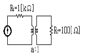
- 약 2
- 약 1.16
- 약 2.16
- 약 3.16
(정답률: 69%)
54. 동기 전동기의 전기자 반작용에 있어서 맞는 것은?
- 전압보다 90° 앞선 전류는 주자속을 감자한다.
- 전압보다 90° 느린 전류는 주자속을 감자한다.
- 전압과 동상인 전류는 주자속을 감자한다.
- 전압보다 90° 느린 전류는 주자속을 교차 자화한 다.
(정답률: 68%)
55. 그림과 같은 단상 전파제어회로의 전원 전압의 최대치가 2300[V]이다. 저항 2.3[Ω], 유도리액턴스가 2.3[Ω]인 부하에 전력을 공급하고자 한다. 제어범위는?
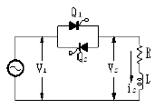
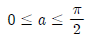
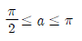
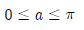
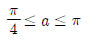
(정답률: 28%)
56. 교류ㆍ직류 양용전동기(Universal motor), 또는 만능 전동기라고 하는 전동기는?
- 단상반발 전동기.
- 3상직권 전동기.
- 단상 직권정류자 전동기.
- 3상 분권정류자 전동기.
(정답률: 53%)
57. 동기속도를 2배로 하였을 때 3상유도 전동기의 동기와트는 몇 배가 되는가?
- 1
- 2
- 3
- 4
(정답률: 51%)
58. 3상 배전선에 접속된 V결선의 변압기에서 전부하시의 출력을 P[kVA]라 하면, 같은 변압기 한대를 증설하여 Δ결선하였을 때의 정격출력 [kVA]는?
- (3/2)P
- (2/√3)P
- √3P
- 2P
(정답률: 63%)
59. 변압기에서 역률 100[%]일 때의 전압 변동률 ε은 어떻게 표시되는가?
- % 저항 강하
- % 리액턴스 강하
- % 써셉턴스 강하
- % 임피던스 전압
(정답률: 70%)
60. 정격 출력시 부하손/고정손의 비는 2이고, 효율 0.8인 어느 발전기의 1/2 정격 출력시의 효율은?
- 0.7
- 0.75
- 0.8
- 0.83
(정답률: 32%)
4과목: 회로이론 및 제어공학
61. 전송 선로에서 무손실일 때, L=96[mH], C=0.6[μF]이면 특성 임피던스[Ω]는?
- 400
- 500
- 600
- 700
(정답률: 76%)
62. R-L직렬회로에서 주파수가 변할 때 임피턴스 궤적은?
- 4사분면 내의 직선
- 1사분면 내의 반원
- 2사분면 내의 직선
- 1사분면 내의 직선
(정답률: 37%)
63. 다음 회로의 4단자 정수는?
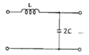
- A=1-2w2LC, B=jwL, C=j2wC, D=1
- A=2w2LC, B=jwC, C=j2w, D=1
- A=1-2w2LC, B=jwL, C=j2C, D=0
- A=2w2LC, B=jwL, C=j2wC, D=0
(정답률: 52%)
64. f(t)=te-3t 일 때 라플라스 변환은?
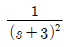
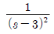
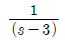
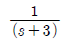
(정답률: 64%)
65. 대칭 5상 교류에서 선간 전압과 상 전압간의 위상차는?
- 27°
- 36°
- 54°
- 72°
(정답률: 67%)
66. 그림과 같은 회로에 t=0에서 S를 닫을 때의 방전 과도전류 i(t)[A]는?
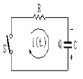
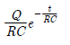
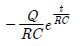
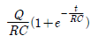
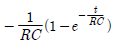
(정답률: 58%)
67. 그림의 사다리꼴 회로에서 부하전압 VL의 크기 [V]는?
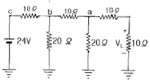
- 3
- 3.25
- 4
- 4.15
(정답률: 53%)
68. 그림과 같은 회로에서 E1과E2는 각각 100[V]이면서 60°의 위상차가 있다. 유도 리액턴스의 단자전압은? (단,R=10[Ω], XL=30[Ω]임)
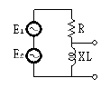
- 164[V]
- 174[V]
- 200[V]
- 150[V]
(정답률: 34%)
69. R=10[Ω], L=10[mH], C=1[μF]인 직렬회로에 100[V] 전압을 가했을 때 공진의 첨예도 Q는 얼마인가?
- 1000
- 100
- 10
- 1
(정답률: 58%)
70. 비정현파를 구성하는 일반적인 성분이 아닌 것은?
- 기본파
- 고조파
- 직류분
- 삼각파
(정답률: 54%)
71. ω가 0에서 ∞까지 변화하였을때 G(jw)의 크기와 위상각을 극좌표에 그린 것으로 이 궤적을 표시하는 선도는?
- 근궤적도
- 나이퀴스트선도
- 니콜스선도
- 보오드선도
(정답률: 48%)
72. 다음의 설명 중 틀린 것은?
- 최소위상 함수는 양의 위상여유이면 안정하다.
- 최소위상 함수는 위상여유가 0이면 임계안정하다.
- 최소위상 함수의 상대안정도는 위상각의 증가와 함께 작아진다.
- 이득 교차 주파수는 진폭비가 1이 되는 주파수이다.
(정답률: 59%)
73. G(jw)=j0.1w에서 w=0.01[rad/sec] 일 때, 계의 이득[dB]은 얼마인가?
- -100
- -80
- -60
- -40
(정답률: 59%)
74. 루스 후르비쯔 판별법에서 F(s)=s3+4s2+2s+K=0에서 시스템이 안정하기 위한 K의 범위를 구하시오.
- 0＜K＜8
- -8＜K＜0
- 1＜K＜8
- -1＜K＜8
(정답률: 61%)
75. 응답이 최종값의 10[%]에서 90[%]까지 되는데 요하는 시간은?
- 상승시간(rise time)
- 지연시간(delay time)
- 응답시간(response time)
- 정정시간(settling time)
(정답률: 72%)
76. 다음과 같이 정의된 신호를 z변환하면?
- 1
(정답률: 51%)
77. 특성방정식이 실수계수를 갖는 S의 유리함수일 때 근궤적은 무슨 축에 대하여 대칭인가?
- 실수축
- 허수축
- 대상축이 없다.
- 원점
(정답률: 52%)
78. 논리식 중 다른 값을 나타내는 논리식은?
(정답률: 47%)
79. 계의 이득 여유는 보드 선도에서 위상곡선이 ( )의 점에서의 이득값이 된다. ( )에 알맞은 것은?
- 90°
- 180°
- -90°
- -180°
(정답률: 66%)
80. 다음 설명 중 옳지 않은 것은?
- S평면의 우측면은 Z평면의 원점에 중심을 둔 단위원 내부로 사상된다.
- Z/(Z-1)에 대응되는 라플라스 변환함수는 1/S이다.
- Z/(Z-e-aT)에 대응되는 시간함수는 e-aT이다.
- e(t)의 초기값은 e(t)의 Z변환을 E(z)라 할 때
 이다.
이다.
(정답률: 51%)
5과목: 전기설비기술기준 및 판단기준
81. 아크용접장치의 용접변압기에서 용접 전극에 이르는 부분에 사용할 수 없는 전선은?
- 2종 캡타이어케이블
- 3종 캡타이어케이블
- 용접용 케이블
- 비닐캡타이어케이블
(정답률: 17%)
82. 전원 측 전로에 시설한 배선용 차단기의 정격전류가 몇 [A] 이하의 것이면 이 전로에 접속하는 단상 전동기에는 과부하 보호장치를 생략할 수 있는가?
- 15
- 20
- 30
- 50
(정답률: 44%)
83. 전로의 절연 원칙에 따라 대지로부터 반드시 절연하여야 하는 것은?
- 전로의 중성점에 접지공사를 하는 경우의 접지점
- 계기용변성기의 2차측 전로에 접지공사를 하는 경우의 접지점
- 저압 가공전선로에 접속되는 변압기
- 시험용 변압기
(정답률: 37%)
84. 직류귀선의 궤도 근접부분이 금속제 지중관로와 1[km] 안에 접근하는 경우 금속제 지중관로에 대한 전식작용의 장해를 방지하기 위한 귀선의 시설방법으로 옳은 것은?
- 귀선은 정극성으로 할 것
- 귀선용 궤조의 이음매 저항을 합친 값은 그 구간의 궤조 자체의 저항의 30[%] 이하로 유지할것
- 귀성용 궤조는 특수한 곳 이외에는 길이 50[m] 이상이 되도록 연속하여 용접할 것
- 귀선의 궤도 근접부분에 1년간의 평균전류가 통할 때에 생기는 전위차는 그 구간안의 어느 두점 사이에서도 2[V] 이하일 것
(정답률: 48%)
85. 철도ㆍ궤도 또는 자동차도의 전용 터널안의 터널내 전선로의 시설방법으로 틀린 것은?
- 저압전선으로 지름 2.0[mm]의 경동선을 사용하였다.
- 고압전선은 케이블 공사로 하였다.
- 저압전선을 애자사용공사에 의하여 시설하고 이를 궤조면상 또는 노면상 2.5[m] 이상으로 하였다.
- 저압전선을 가요전선관공사에 의하여 시설하였다.
(정답률: 51%)
86. 무대, 무대마루 밑, 오케스트라 박스, 영사실 기타 사람이나 무대 도구가 접촉할 우려가 있는 곳에 시설하는 저압 옥내배선, 전구선 또는 이동 전선은 사용전압이 몇 [V]이어야 하는가?
- 60
- 110
- 220
- 400
(정답률: 62%)
87. 특별고압 가공전선로에 사용되는 B종 철주 중각도형은 전선로 중 최소 몇 도를 넘는 수평 각도를 이루는 곳에 사용되는가?
- 3
- 5
- 8
- 10
(정답률: 57%)
88. 일반 주택의 저압 옥내배선을 점검하였더니 다음과 같이 시공되어 있었다. 잘못 시공된 것은?
- 욕실의 전등으로 방습 형광등이 시설되어 있다.
- 단상 3선식 인입개폐기의 중성선에 동판이 접속되어 있었다.
- 합성수지관공사의 관의 지지점간의 거리가 2[m]로 되어 있었다.
- 금속관공사로 시공하였고 IV전선을 사용하였다.
(정답률: 50%)
89. 방전등용 안정기로부터 방전관까지의 전로를 무엇이라고 하는가?
- 소세력회로
- 관등회로
- 급전선로
- 약전류 전선로
(정답률: 54%)
90. 시가지에 시설하는 통신선은 특별고압 가공전선로의 지지물에 시설하여서는 아니된다. 그러나 통신선이 지름 몇 [mm] 이상의 절연전선 또는 이와 동등 이상의 세기 및 절연효력이 있는 것이면 시설이 가능한가?
- 4
- 4.5
- 5
- 5.5
(정답률: 31%)
91. 욕탕의 양단에 판상의 전극을 성치하고, 그 전극 상호간에 미약한 교류전압을 가하여 입욕자에게 전기적 자극을 주는 전기욕기의 전원 변압기 2차측 전로의 사용전압은 몇 [v] 이하인 것을 사용하여야 하는가?
- 5
- 10
- 30
- 60
(정답률: 40%)
92. 가공 접지선을 써서 제2종 접지공사를 하는 경우 변압기의 시설 장소로부터 몇 [m] 까지 떼어 놓을 수 있는가?
- 50
- 100
- 150
- 200
(정답률: 44%)
93. 154[kV] 가공전선을 지지하는 애자장치의 50[%] 충격섬락전압 값이 그 전선의 근접한 다른 부분을 지지하는 애자장치의 값의 몇[%] 이상이고, 또한 위험의 우려가 없도록 하면 시가지 기타 인가가 밀집하는 지역에 시설하여도 되는가?
- 100
- 1⑤
- 110
- 115
(정답률: 27%)
94. 고압 가공인입선 등을 다음과 같이 시설하였다. 시설 방법이 옳지 않은 것은?
- 고압 가공인입선 아래에 위험표시를 하고 지표상 3.5[m] 높이에 시설하였다.
- 전선은 5[mm]의 경동선을 사용하였다.
- 애자사용공사로 시설하였다.
- 15[m] 떨어진 다른 수용기에 고압 연접인입선을 시설하였다.
(정답률: 48%)
95. 다음의 공사에 의한 저압 옥내배선중 사용되는 전선이 반드시 절연전선이 아니라도 상관없는 공사는?
- 합성 수지관 공사
- 금속관 공사
- 버스 덕트 공사
- 플로어 덕트 공사
(정답률: 46%)
96. 차량, 기타 중량물의 압력을 받을 우려가 없는 장소에 지중 전선을 직접 매설식에 의하여 매설하는 경우에는 매설 깊이를 몇 [cm] 이상으로 하여야 하는가?
- 40
- 60
- 80
- 100
(정답률: 58%)
97. 빙설이 많은 지방이고 인가가 많이 연접된 장소에 시설하는 가공전선로의 구성재 중 병종풍압 하중의 적용을 할 수 없는 것은?
- 저압 또는 고압가공 전선로의 가섭선
- 저압 또는 고압 가공 전선로의 지지물
- 35,000[V] 이하의 전선에 특별고압 절연전선을 사용하는 특별고압 가공전선로의 지지물
- 35,000[V] 이상인 특별고압 가공전선로의 지지물에 시설하는 가공전선
(정답률: 37%)
98. 저압의 전선로 중 절연부분의 전선과대지간의 절연저항은 사용전압에 대한 누설전류가 최대공급전류의 몇 분의 1을 넘지 아니하도록 유지하여야 하는가?
- 1,000
- 2,000
- 3,000
- 5,000
(정답률: 64%)
99. 고압 지중전선이 지중 약전류 전선 등과 접근하여 이격거리가 몇 [cm] 이하인 때에는 양 전선 사이에 견고한 내화성의 격벽을 설치하는 경우 이외에는 지중전선을 견고한 불연성 또는 난연성의 관에 넣어 그 관이 지중 약전류 전선 등과 직접 접촉되지 않도록 하여야 하는가?
- 15
- 20
- 25
- 30
(정답률: 47%)
100. 풀용 수중조명등에 사용되는 절연변압기의 2차측 전로의 사용전압이 몇 [V]를 넘는 경우에 그 전로에 지기가 생겼을 때 자동적으로 전로를 차단하는 장치를 하여야 하는가?
- 30
- 60
- 150
- 300
(정답률: 40%)
일력은 자기장 세기와 면적의 곱으로 나타낼 수 있다. 따라서 일력은 다음과 같이 계산할 수 있다.
일력 = 자기장 세기 × 면적 = 10.5 [AT/m] × (9.8 × 10^-5 [m^2]) = 1.029 × 10^-6 [N]
여기서 면적은 막대 자석의 단면적이다.
막대 자석이 회전하는 거리는 원호의 길이로 나타낼 수 있다. 따라서 회전하는 거리는 다음과 같이 계산할 수 있다.
회전하는 거리 = 2π × 반지름 = 2π × (0.5 × 10^-3 [m]) = 3.142 × 10^-3 [m]
따라서 필요한 일은 다음과 같이 계산할 수 있다.
필요한 일 = 일력 × 회전하는 거리 = 1.029 × 10^-6 [N] × 3.142 × 10^-3 [m] = 3.236 × 10^-9 [J]
보기에서 정답이 "1.03×10^-3"인 이유는 단위를 잘못 사용했기 때문이다. 정답인 "1.03×10^-3"은 단위를 [mJ]로 사용한 것이다. 따라서 정답은 3.236 × 10^-9 [J]를 [mJ]로 변환한 값인 것이다.